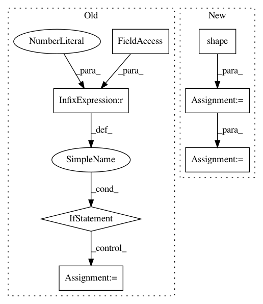

319d76de1d740a0500b9bc321ddc40bf3c032f71,tensorflow_transform/tf_utils.py,,reduce_batch_count_mean_and_var,#Any#Any#,646
Before Change
if isinstance(x, tf.SparseTensor):
// This means reduce_instance_dims=False.
// TODO(b/112656428): Support SparseTensors with rank other than 2.
if x.get_shape().ndims != 2:
raise NotImplementedError(
"Mean and var only support SparseTensors with rank 2")
col_count, col_indices = x.dense_shape[1], x.indices[:, 1]
x_sum = tf.math.unsorted_segment_sum(x.values, col_indices, col_count)
x_mean = tf.where(tf.math.greater(x_count, 0),
x_sum / x_count,
tf.zeros_like(x_count, dtype=x.dtype))
mean_values = tf.gather(x_mean, col_indices)
x_minus_mean = x.values - mean_values
col_sum_of_squares = tf.math.unsorted_segment_sum(
tf.square(x_minus_mean), col_indices, col_count)
After Change
x_mean = tf.where(tf.math.greater(x_count, 0),
x_sum / x_count,
tf.zeros_like(x_count, dtype=x.dtype))
x_minus_mean = tf.sparse.add(x, -tf.broadcast_to(x_mean, tf.shape(x)))
x_minus_mean_sparse = tf.SparseTensor(x.indices,
tf.gather_nd(x_minus_mean, x.indices),
x.dense_shape)
sum_of_squares = tf.math.reduce_sum(
tf.square(tf.sparse.to_dense(x_minus_mean_sparse)), axis=0)
x_variance = tf.where(
In pattern: SUPERPATTERN
Frequency: 3
Non-data size: 7
Instances
Project Name: tensorflow/transform
Commit Name: 319d76de1d740a0500b9bc321ddc40bf3c032f71
Time: 2021-01-26
Author: zoy@google.com
File Name: tensorflow_transform/tf_utils.py
Class Name:
Method Name: reduce_batch_count_mean_and_var
Project Name: HyperGAN/HyperGAN
Commit Name: cb29df4dea83d69ef9f5109398b23158a8c680dc
Time: 2018-09-25
Author: martyn@255bits.com
File Name: examples/next-frame.py
Class Name: VideoFrameSampler
Method Name: _sample
Project Name: tensorflow/agents
Commit Name: 517b1850068dbc533f614b5b287627cd75984b73
Time: 2020-06-10
Author: bartok@google.com
File Name: tf_agents/bandits/networks/global_and_arm_feature_network.py
Class Name: GlobalAndArmCommonTowerNetwork
Method Name: call